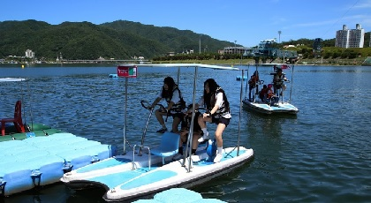
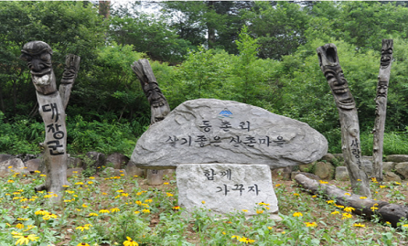
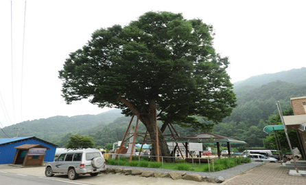
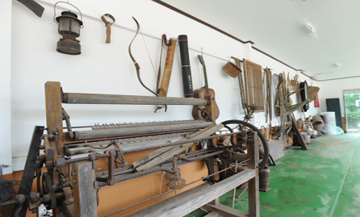
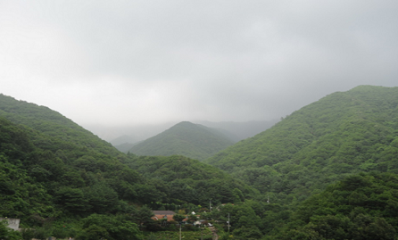

동구래 마을에는 특이한 모습을 한 도자기들이 있습니다. 사람의 형상을 한것도 있고, 물고기의 모습을 한 것도 있고, 동물의 모습을 것들도 있습니다. 그런데 그 모습이 왠지 다른데서 보지 못한 특이함을 갖고 있습니다. 도자기 공방에서 어떤 모습의 도자기들이 나올지 궁금합니다. 도시에서는 좀처럼 보기 힘들 야생화를 마당 한귀퉁이에서 볼 수 있습니다. 사실 이름을 모르는 꽃이 더 많은 것 같습니다. 저 꽃이... 할미꽃이었나요? 귀여운 다육이들도 만날 수 있습니다. 이 모든 것들이 그냥 자연에서 자라는 건 아닙니다. 정성들여 보호해주고 관리해주는 사람이 있어 가능한것입니다. 그래서 동구래마을은 연못, 식물, 도자기가 주인이고 사람이 아닌가봅니다.
동구레마을
동구레마을
자연을 담아오고 꽃과 도자기가 사는 마을
위치 : 강원도 화천군 하남면 원천리 649-2
체험관광
에어링화천
하늘가르기 | 수상자전거 | 카누
붕어섬 특급 여행
위치 : 강원 화천군 화천읍 강변로 2-54
관광객, 면회객, 주민을 대상으로 붕어섬 일원에서는 사계절 체험관광시설 정비를 마치고 2014.04.05부터 개장하여 2014.11.30일까지 재단법인나라에서 위탁 운영한 다.
생생 자연 체험
- 
- 
- 
- 
동촌리 산속호수마을
화천에서 깊은 산속으로 들어가는 도로를 타고 굽이굽이 돌아 들어가면 파로호를 가슴에 품은 고요한 마을이 나타난다. 이곳이 바로 동촌리 산속 호수마을. 2007년 환경부 선정 생태우수마을로 뽑혔고, 농림부가 주최한 ‘아름다운 마을 가꾸기 경진대회’에서 장려상을 수상한 바 있는 아름다운 마을이다. 동촌마을 앞에는 파로호가 자리하고 뒤쪽으로는 해발 1,000m의 해산이 자리 잡고 있다. 마을 어디로 가도 파로호의 시원한 물살이 눈에 들어온다. 서정적인 분위기가 물씬 풍겨 더욱 매력적이다. 동촌마을에는 파로호를 시원하게 조망할 수 있는 펜션과 민박집이 많다. 호숫가에서 즐기는 민물낚시, 표고버섯 채취, 오디 따먹기, 두부와 막국수 만들기, 산나물 캐기, 옥수수 따기, 산메기와 개구리 잡기 등 다양한 체험거리도 넘친다.